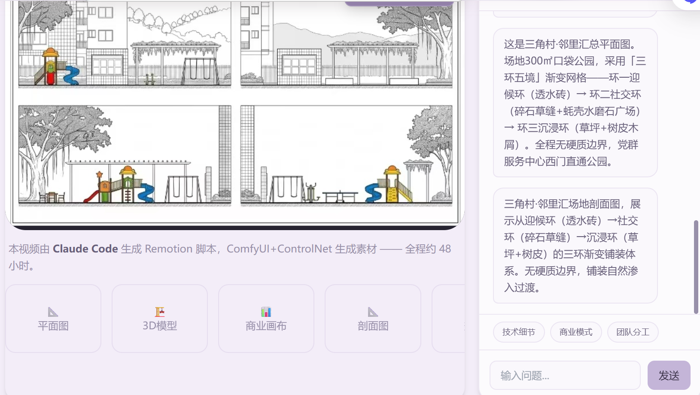
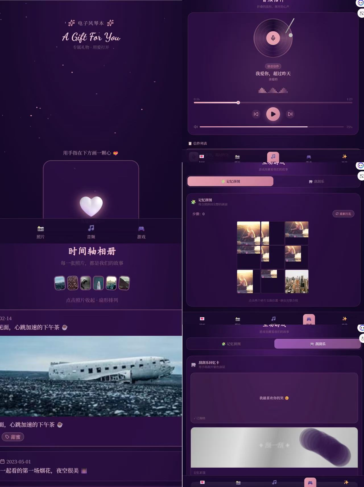

致力于用 AIGC 工具链解构复杂场景
构建可持续的产品验证循环
48小时 · 1人 · AI协同 · 双项目架构 · 3引擎导出
"48小时单人AI协同交付，3引擎原生导出——证明AI不是辅助，是新的开发范式。"
AI全流程：Claude Code → 架构设计 → 代码生成 → 测试 → 部署
24项pytest · feature-branch · 原子化commit
48h单人: 引擎+导出器+Web+Docker
core/exporters/app 三层分离 · DI · 可测试
48小时 · 1人 · AI协同 · 双项目架构 · 24项自动化测试
PixelForge AI (主项目 — 5 Tab) AssetCraft Studio (补充工具 — 设计协调) ┌────────────────────────────┐ ┌──────────────────────────┐ │ app.py ←── Gradio UI ──→ │ │ app.py ←── Gradio UI ──→│ │ ┌──────────────────────┐ │ │ 文生图 | 图生图 | 调色板 │ │ │ core/ │ │ │ 批量导出 (@1x + @2x) │ │ │ generator.py │──│── API ───│ modules/ │ │ │ prompt_engine.py │ │ │ generator.py / palette │ │ │ style_manager.py │ │ │ style_templates.py │ │ │ animation.py │ │ │ exporter.py │ │ │ tileset.py │ │ └──────────────────────────┘ │ │ color_palette.py │ │ │ │ cache.py │ │ 共享: SiliconFlow API / .env │ ├──────────────────────┤ │ │ │ exporters/ │ │ │ │ unity_exporter.py │──│──→ .meta + GUID │ │ godot_exporter.py │──│──→ .tres + .tscn │ │ cocos_exporter.py │──│──→ .plist + sprite sheet │ └──────────────────────┘ │ │ tests/ — 24项 pytest │ └────────────────────────────┘
"如何用AI重新定义2D游戏资产的生产关系"
牛七云AI实习训练营题目二"2D游戏素材生成"，要求48小时内完成。传统做法需要前后端分离、手动集成SDK、编写大量样板代码——但我选择了一条更激进的路线： 全程使用Claude Code进行AI协同开发，一人完成全流程。
初始提交设计并实现一个模块化、可测试、可部署的2D素材生成平台： 文本输入→风格控制→批量生成→引擎原生格式导出。 关键约束：评委要求"主分支时刻可运行"、"PR粒度精细"、"commit时间均匀分布"。
PR 列表
采用分层模块化架构 + AI驱动的原子化提交策略：
1. core/层封装所有业务逻辑（生成器/提示词引擎/风格管理器/缓存）
2. exporters/层为三个引擎独立实现导出器（策略模式）
3. app.py作为单一Web入口（Gradio Blocks）
4. tests/层覆盖所有核心模块（24项pytest）
每个功能独立feature分支，--no-ff merge保持历史清晰。
48小时单人交付完整生产级系统： 18个源文件 / 5个Web功能Tab / 3引擎导出 / 24项自动化测试。 代码架构清晰分层，可直接扩展新引擎、新模型。 Docker一键部署，systemd守护进程。
B站演示视频"让每个独立开发者都能拥有自己的美术资产管线"
2D游戏开发中，美术素材是最大的效率瓶颈。找素材→调风格→切图→导入引擎→配置参数， 一套5个图标的工作流通常需要2天时间。对于独立开发者和小团队，这是不可承受的成本。
构建一个覆盖完整游戏素材品类的生成工具： 精灵/瓦片/UI/特效/动画 — 5大品类，6种风格，10种提示词模板。 输出格式必须无缝对接Unity/Godot/Cocos Creator三大主流引擎。
导出器源码
深度逆向分析三个引擎的资源格式，自主实现原生格式导出：
1. Unity: .meta GUID + TextureImporter配置，filterMode=Point保持像素清晰
2. Godot: .tscn Sprite2D节点 + .tres SpriteFrames动画资源
3. Cocos: .plist 精灵表 + 帧数据，Cocos Creator 3.x兼容
同时实现风格一致性控制系统：种子管理→调色板提取→提示词工程，确保系列素材视觉统一。
效率提升从2天→10分钟。覆盖5大游戏素材品类，支持3大引擎原生导出。 批量生成+风格一致性保证+一键打包下载，完整的2D游戏美术资产生产管线。
视频演示 (1:05 批量导出)AI Native 全栈实验 · 基于 Claude API
→ 这是我早期AI应用探索，在 AssetCraft Studio 中进化为完整的AI协同工程实践
全栈开发者 / 产品负责人
独立完成从需求到部署的全栈开发，打造了支持视频/图片/UI交互的AI助手。深度集成Claude API，运用Prompt工程实现复杂任务解析，是AI Native开发的完整实践。

创意负责人 / 全栈开发者
独立负责创意、设计与开发，融合 WebAR、Canvas 动画，打造高互动性情感表达工具。支持情侣间创意互动与情感记录。

一次完整的 AI 产品 MVP 循环
→ 传统行业AI赋能经验，在 AssetCraft Studio 中扩展为2D游戏素材的垂直领域应用
珠海斗门三角村党群服务中心西侧口袋公园（300㎡），面对「建而不管、用而不活」的乡村公共空间痛点， 以 ¥5.1–9.0 万 极低预算， 探索「空间 + 运营」一体化产品方案。
作为发起人与 AI 产品负责人，主导从 0 到 1 探索——打造可验证的「空间+运营」产品原型。
★ Vibe Coding 完整体现 —— 验证周期「周」→「天」。
点击播放项目演示
本视频由 Claude Code 生成 Remotion 脚本，ComfyUI+ControlNet 生成素材 —— 全程约 48 小时。
以下是通过 Claude 描述动画需求，直接生成的 Remotion 脚本核心部分，耗时约 2 小时。
/* ============================================================
* 文件: LiuShuJianJing.tsx | 生成: Claude Code (Vibe Coding)
* Prompt: "请扮演AI产品经理，帮我写一段Remotion代码，
* 实现六棵树的依次弹性生长动画，叠加'三角茶寮'"
* 调优: 3轮迭代 — spring damping→12, stiffness→100
* 耗时: ≈2h（含Prompt调试+参数微调+渲染）| 传统方式≈1周
* ============================================================ */
import { useCurrentFrame, useVideoConfig, spring, interpolate } from "remotion";
import { AbsoluteFill } from "remotion";
const TREES = [
{ name: "引", color: "#7B8FA1", offsetX: 100, label: "境一·入口" },
{ name: "弈", color: "#8B9E8B", offsetX: 280, label: "境二·棋盘" },
{ name: "聚", color: "#FF6B6B", offsetX: 460, label: "境三·茶寮★", highlight: true },
{ name: "憩", color: "#C4AF98", offsetX: 640, label: "境四·卡座" },
{ name: "韵", color: "#D6C9B8", offsetX: 820, label: "境五·木篱" },
];
export const LiuShuJianJing = () => {
const frame = useCurrentFrame();
const { fps } = useVideoConfig();
const treeAnimations = TREES.map((tree, i) => {
const progress = spring({
fps, frame: frame - i * 30,
config: { damping: 12, stiffness: 100 },
});
return { tree, progress };
});
return (
<AbsoluteFill style={{ background: "#EDE8E1" }}>
{treeAnimations.map(({ tree, progress }) => (
<div style={{
position:"absolute", left:tree.offsetX, bottom:120,
width:100, height:240*progress, borderRadius:"50% 50% 0 0",
background:tree.color, opacity:progress,
transformOrigin:"bottom center",
transform:`scaleY(${progress})`,
}}>
<span style={{color:"#fff",fontSize:20,fontWeight:700}}>{tree.name}</span>
</div>
))}
</AbsoluteFill>
);
};Remotion 动画 + AI 助手联动
「AIGC辅助设计-开发-验证」标准化流程
调研+设计+技术+运营完整交付
按 AI 产品经理能力模型组织
Midjourney / SD
熟练：多模态 Prompt 工程，40+ 张智能图片生产，风格精确可控
ChatGPT / Claude
熟练：复杂任务规划、文案生成、用户访谈模拟、PRD 辅助撰写
ComfyUI / 3D 工具
掌握：节点工作流搭建、腾讯混元 3D 生成、Blender 辅助建模
项目管理
SOP 搭建·流程优化，交付周期缩短 40%
跨团队协作
多方需求平衡
快速学习
新技术工具适配
主修：PS、AI、SketchUp、CAD
GPA 3.69（专业前 0.12%）
🏅 2024年9月 校级奖学金
AIGC 内容产品助理
AI 教学方案设计
数据驱动增长
宣传部长 / 项目负责人
园林背景给了我从物理空间中发现用户需求的直觉；AI 工具链则让我拥有了快速将需求转化为可验证产品原型的能力。AssetCraft Studio 是我的证明——一个实习生，用 AI 协同，48小时从0到1交付了覆盖3引擎的完整2D素材管线。
求职意向：AI 产品经理实习生（AIGC / 大模型应用方向）
Built with Claude Code & Tailwind CSS | © 2026 白清凤
快捷键: Ctrl+Shift+A · 配置存于 localStorage